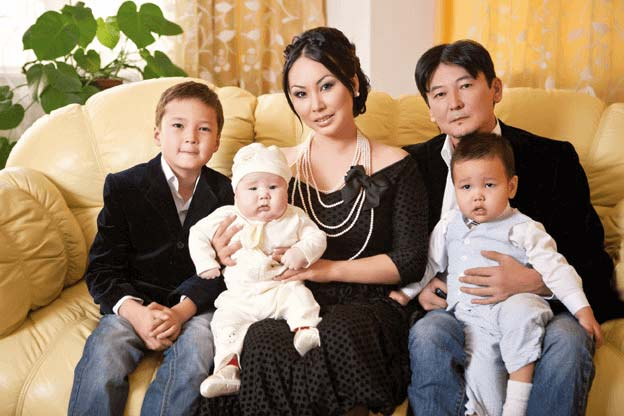

Как я сбросила 20 килограммов за 1,5 месяца?
Я смотрела на себя в зеркало и плакала, не могла остановиться. Мне муж угрожал разводом!
Всю жизнь меня обзывали «Томпақ». В школе, когда вышел мультфильм «мадагаскар» меня называли «Глория» - в честь этой веселой бегемотихи. Ко второму курсу я уже стала принимать это.
Я помню в детстве мама пугала меня, если я открою ночью холодильник и съем колбасу – то меня заберет бабайка! Сейчас, я уже взрослая женщина и понимаю, что мама хотела мне только лучшего. Но этими действиями она развила у меня РПП.
Я никак не могла отказаться от еды. Я ела и винила себя за то, что ела.
Так проходили годы и я закрыла в себе желание похудеть. Ушла в работу и не обращала внимания на лишний вес.
Известная инстаграм знаменитость Казахстана рассказала, как она боролась с лишним весом.
Семья - это самое важное в жизни. Но у нас с мужем очень плотный рабочий график. Поэтому, когда я забеременела вторым сыном, мне было сложно следить за своей фигурой. Я очень сильно поправилась во время беременности и вскоре боялась показываться не только на людях, но и на фотографиях.
Амиркулова Гаухар открывает глаза женщинам Казахстана!
Вот это да! (*зал ахает*). Как же вы смогли похудеть после родов?
8 килограммов ушло после родов, а все остальное пришлось сбрасывать самой. Наверное, это мечта любой девушки - есть что угодно и не толстеть, а к тому же иметь великолепную фигуру. Тем более - после беременности. Нам повезло, что в XXI веке это стало реальностью. Если раньше я увлекалась диетами и 5 раз в неделю занималась спортом, то сейчас понимаю, что это невозможно. У меня просто нет столько времени на себя. Но цель похудеть в кратчайшие сроки у меня была. Что делать?
У нас принято не показываться на люди после рождения ребенка 40 дней. Поэтому я поставила себе цель вернуться в прежнюю форму за это время. Диеты помогали, но как только я начинала питаться как обычно - килограммы возвращались и еще больше, чем было до. Сил не хватало. Очень часто болела голова, я уставала, даже если ничего толком не делала.
И вот, когда после всех этих неудач я уже совсем пала духом, к нам в гости пришла одна давняя знакомая по работе. Мы ее не сразу узнали - настолько она изменилась. Это была уже не толстушка, как раньше, а стройная и симпатичная девушка. Я не могла поверить своим глазам, ведь раньше она весила более 100 кг! Оказалось, что она так сильно похудела на жиросжигающем комплексе под названием Tazo. Он-то и помог мне быстро вернуться в прежнюю форму!
Трудно поверить, но Tazo - это не комплексная диета, а специальное, натуральное средство на травах с очень приятным вкусом!. Моя знакомая помогла мне заказать Tazo в официальном интернет-магазине. Очень важно заказывать Tazo у официального производителя, чтобы не купить подделку. Я платила курьеру - никаких предоплат.
И всего через 2 недели я была шокирована результатом - минус 12 кг! Я долго не могла поверить в то, что происходило с моим организмом, но килограммы продолжали уходить, объемы таяли, а моя фигура менялась на глазах. Я не узнавала саму себя! Некоторые мои знакомые сбрасывали и намного больше!
Всего за месяц приема я сбросила 24 кг, которые остались у меня после родов. Я была в восторге! Ведь теперь я могла вернуться на сцену не переживая о своей внешности! Я обрела ту стройность, о которой даже не мечтала!
Теперь я советую Tazo всем своим подругам, коллегам по работе и просто знакомым мне людям. В общем, я полностью довольна своими результатами, верю, что и у Вас все получится! Tazo действительно сжигает весь жир, лишние килограммы и объемы просто тают!
Потрясающе! Гаухар, есть ли растяжки после такого интенсивного похудения?
— Нет, похудение от Tazo не оставляет растяжек! Я очень боялась растяжек во время беременности и пользовалась кремами. Но после родов я перестала так тщательно ухаживать за кожей и все равно у меня не осталось растяжек во время похудения.
Что с кожей? как она так стянулась?
— Кожа стягивается идеально! У меня, как и у моих знакомых, никаких проблем не было.
Что с питанием? На какую диету сесть?
— Я против диет – они не нужны, достаточно каждый день употреблять Tazo.
Правда ли надо перестать есть после 6 вечера?
— Это миф! Я ела столько, сколько требовал мой организм не ограничивая себя в разнообразии. Просто уменьшала порции.
Гаухар, весь зал уже в нетерпении узнать где все-таки достать такою супер добавку?
— Настоящий сертивицированый Tazo можно заказать только на сайте ОФИЦИАЛЬНОГО поставщика. Ссылка на их сайт тут.
Спасибо, Гаухар. Надеюсь все успели записать? Нам было очень интересно услышать вашу историю преображения. Какие пожелания и напутствия вы скажите нашим телезрителям?
— Вам спасибо! Скажу лишь то, что не откладывайте своё похудение. Вы и сами не заметите как через время прибавите еще десяток килограмм. Пока не поздно - попробуйте Tazo и оставляйте свои отзывы.
Комментарии к выпуску (893)